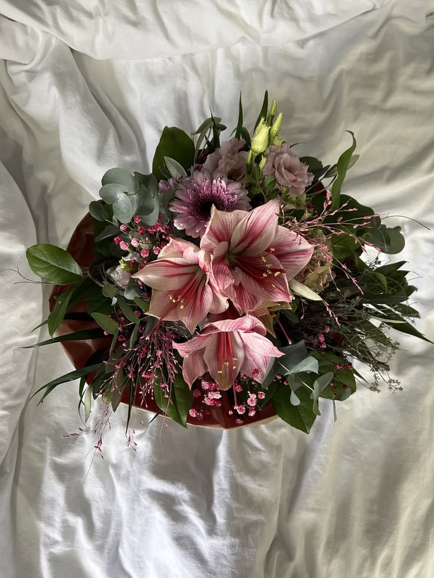
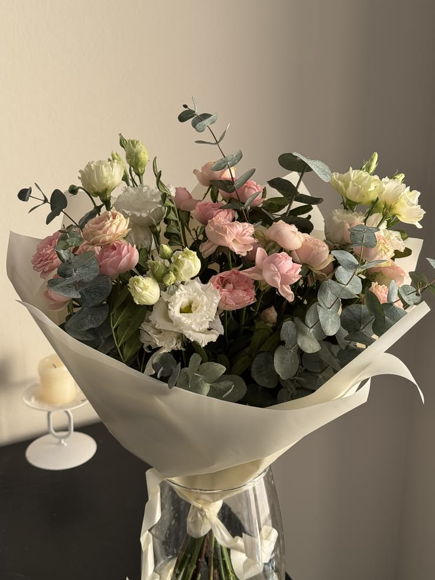
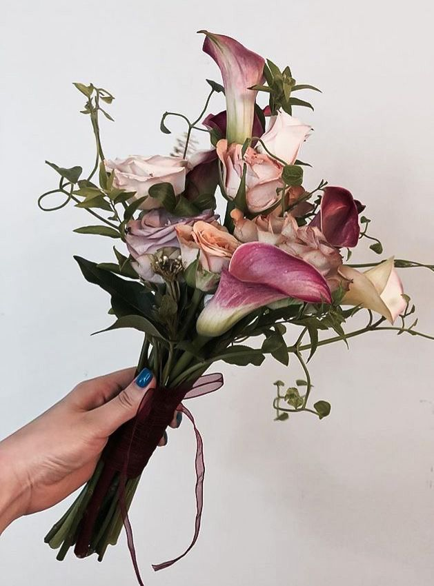

| Название | Состав | Цена | Фото |
|---|---|---|---|
| Лавандовое облако | Белые и сиреневые орхидеи, розы кремовых и нежно-розовых оттенков, сиреневые соцветия дельфиниума или маттиолы, белая гортензия, мелкие цветы и декоративная зелень. | 4500 ₽ |
|
| Розовый космос | Крупноцветковые амариллисы, розовая гербера или хризантема, нежно-розовые гвоздики, эвкалипт, зелень и воздушные розовые веточки. | 4200 ₽ |
 |
| Персиковый рассвет | Розовые и персиковые розы, белые эустомы, светлые хризантемы, эвкалипт и зелень. | 3200 ₽ |
 |
| Вино и пудра | Каллы, розы, декоративная зелень и вьющиеся побеги. | 2800 ₽ |
 |
Воздушный букет в нежной палитре сиреневого, кремового и белого. Орхидеи, розы и пышные соцветия создают ощущение лёгкости, а зелень добавляет природной свежести. Для признания в чувствах, красивого повода или просто дня, который хочется сделать особенным.
Выразительный букет с крупными розовыми амариллисами в центре композиции. Нежные цветы, эвкалипт и тонкие воздушные веточки добавляют ему глубины и лёгкой романтичности. Яркий жест для тех, кто любит необычные букеты с характером.
Тёплая композиция в оттенках персика, розового и сливочного. Розы, светлые цветы и серебристый эвкалипт складываются в мягкий, гармоничный букет — словно утренний свет в тихой комнате. Подойдёт для поздравления, благодарности или нежного знака внимания.
Романтичный букет с выразительным характером: глубокие винные каллы сочетаются с нежными розами пудровых и персиковых оттенков. Изящные вьющиеся побеги придают композиции лёгкость и естественную форму, а бархатная лента поддерживает её благородную палитру. Красивый жест для особенного повода или без повода — чтобы сказать о чувствах без лишних слов.